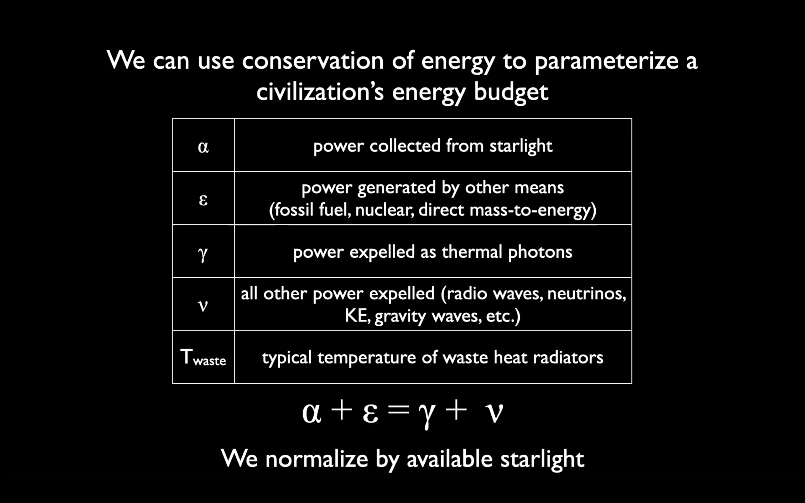

- cocconi1959.pdf is communication seti, and Search for Artificial Stellar Sources of Infrared Radiation is "energy seti" and that's what this talk is about.
- tech and time increases the energy metabolism of the alien civilization.
- using energy ofc means the the entropy or temperature is decreased not that energy get used up. so star can't ever be go invisible because of "use".
- the unsuable high entropy energy must emerge in this process of collection and generation of energy using that of the host star. the heat or mid-infrared radiation.
- generally "any" energy use of a civilisation will have the MIR footprint to its host star.
- the proto stars too would have MIR signature, so it's interesting to search for MIR signs even if we don't fine aliens, though if they do exist they're to be found in the MIR signs.
- Dyson Spheres to be checked out
- there's a physical limit of the size of solid spheres. monolithic dyson sphere is not gravitationally stable. radiation pressure doesn't stabilise the sphere. so both the mechanical buckling and star's gravity's pressure will collapse the dyson sphere. checkout eq 22 of the paper to see the required stiffness. so instead dyson swarm maybe?
- how long can it take to become K3 in Kardashev scale sense? the paper: The Fermi Paradox and the Aurora Effect; Exo-civilization Settlement, Expansion and Steady States (also checkout Astrobiological Phase Transition; Towards Resolution of Fermi’s Paradox)
- G hat survey: Glimpsing Heat from Alien Technologies
- 1st G hat paper: The Ĝ Infrared Search for Extraterrestrial Civilizations with Large Energy Supplies. I. Background and Justification justifies why to look at galaxies.
- Explanation for the Absence of Extraterrestrials on Earth said "there shouldn't be any K2s if the galaxy is not K3", that is if the aliens are not here, that is not K3, then they're no where. this is because it is assumed that the interstellar travel is easy. so we're alone in the MW, because it manifestly doesn't have K3! so if he's right we'll find K3 in MW, and if not then K2 will be found.
- here the alpha and gamma are artifact seti and Nu is optical seti. epsilon perhaps can only be detected as a black box creating energy? or can it be detected specifically? the conservation of energy might give us an idea of how much energy is being used by technology around a star. 
- so somehow Kardashev scale scale helps parametrising what it is that is being searched for, and therefore if nothing is found at least an upper limit is observed. (? i need to understand this more ?) Placing a limit on star-fed Kardashev type III civilisations. was the first in this direction.
- 2nd G hat paper: The Ĝ Infrared Search for Extraterrestrial Civilizations with Large Energy Supplies. II. Framework, Strategy, and First Result goes into how to do this kind of search for galaxies.